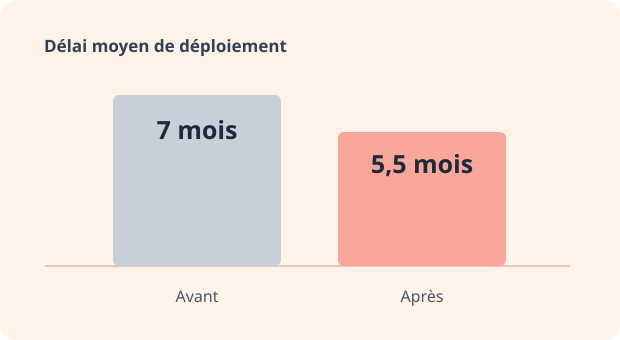

Pilotage et intégration
Déployer des plateformes web et mobile
Je pilote des implémentations SaaS B2B de bout en bout, depuis le cadrage des besoins jusqu’à la prise en main de la plateforme par les équipes clientes.

Cadrer le déploiement
Je définis avec le client le périmètre, les jalons, les rôles et les critères de recette. J’anime les points de suivi et j’anticipe les dépendances entre les équipes métier, IT et produit.
Intégrer la plateforme au SI
J’accompagne la configuration du SSO (SAML ou OIDC) et les intégrations API. Je teste les appels avec Postman et j’analyse les flux et les logs pour qualifier les écarts avant la recette. Selon le projet, je coordonne aussi la reprise de données et les transferts SFTP.
Déployer sur le web et le mobile
Je coordonne la recette, la formation et la mise en production. Sur le mobile, j’ai accompagné la publication d’applications en marque blanche sur iOS et Android.
Structurer le travail de l’équipe
J’ai créé des playbooks pour formaliser les étapes de déploiement et mis en place des automatisations internes pour les tâches récurrentes. Avec l’équipe, nous avons fait passer la part de projets standardisés de 55 % à 81 % et ramené le délai moyen de déploiement de 7 à 5,5 mois. La satisfaction sur l’accompagnement et la gestion de projet s’est maintenue à 9,2/10.